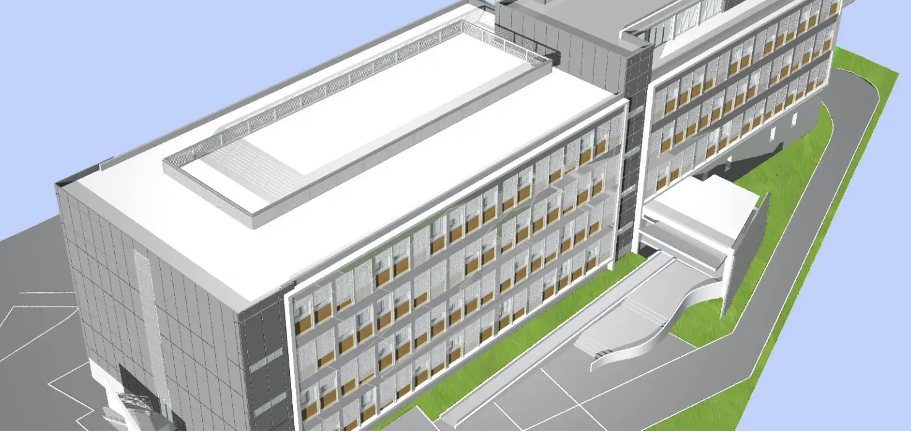

About the Sirigu Lab
Neuroscience across species, methods and scales
About the lab
The Sirigu Lab studies the neural mechanisms that shape social behaviour, action and conscious experience. Our research combines human cognitive neuroscience, clinical neurology and experimental studies in non-human primates, with a particular interest in oxytocin and the biological foundations of social behaviour.
Our research moves between fundamental and clinical neuroscience, combining behavioural experiments, neuroimaging, electrophysiology, brain stimulation and neuromodulation. Studies in humans and non-human primates allow us to address complementary aspects of the same questions — from neural circuits and neurochemical systems to cognition and behaviour.
The lab is based at the Institut de Neurosciences de la Timone in Marseille, within a multidisciplinary environment spanning systems neuroscience, neuroimaging, neurology and neurosurgery.
Where to find us
Institut de Neurosciences de la TimoneFaculté de Médecine
27, boulevard Jean Moulin
13005 Marseille – France
Part of our research also takes place at the MPRC on the CNRS Marseille campus.
Centre de Primatologie de la Méditerranée (MPRC)
31 Chemin Joseph Aiguier
13009 Marseille
Angela Sirigu
angela.sirigu@cnrs.fr
